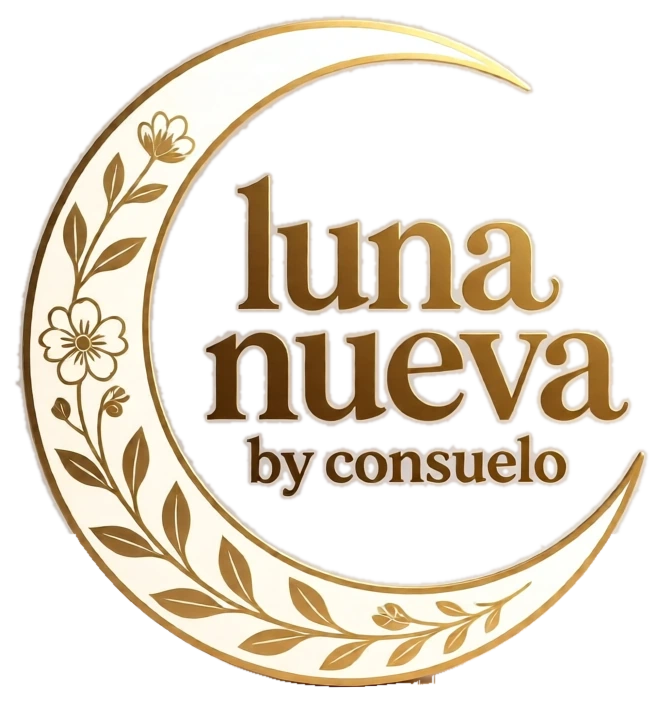
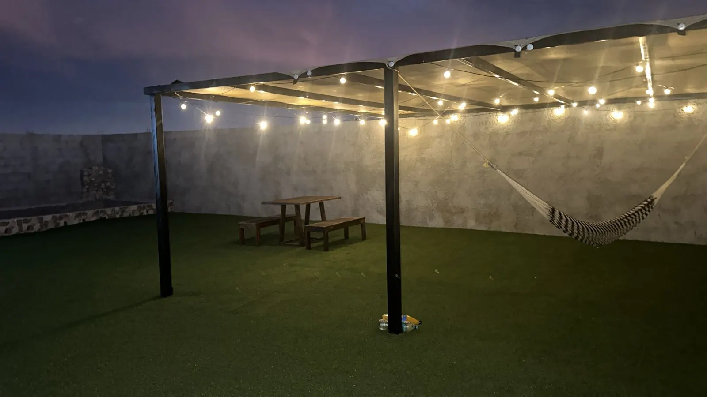
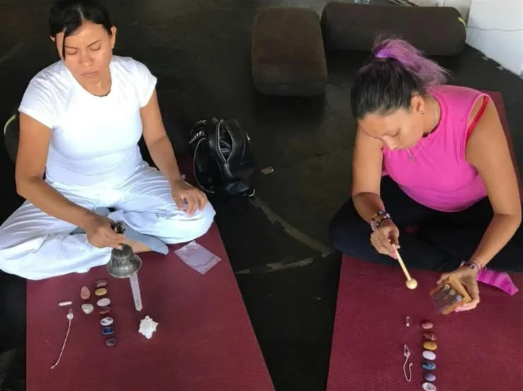
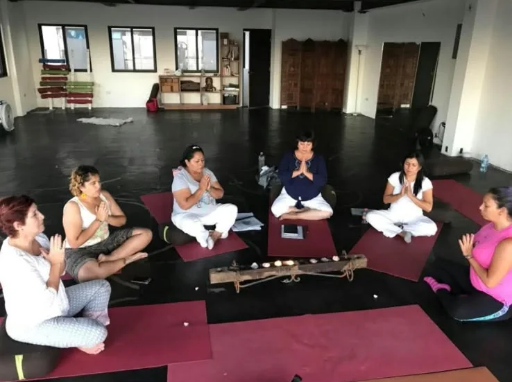
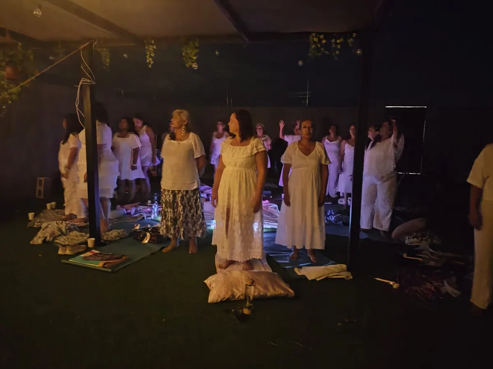
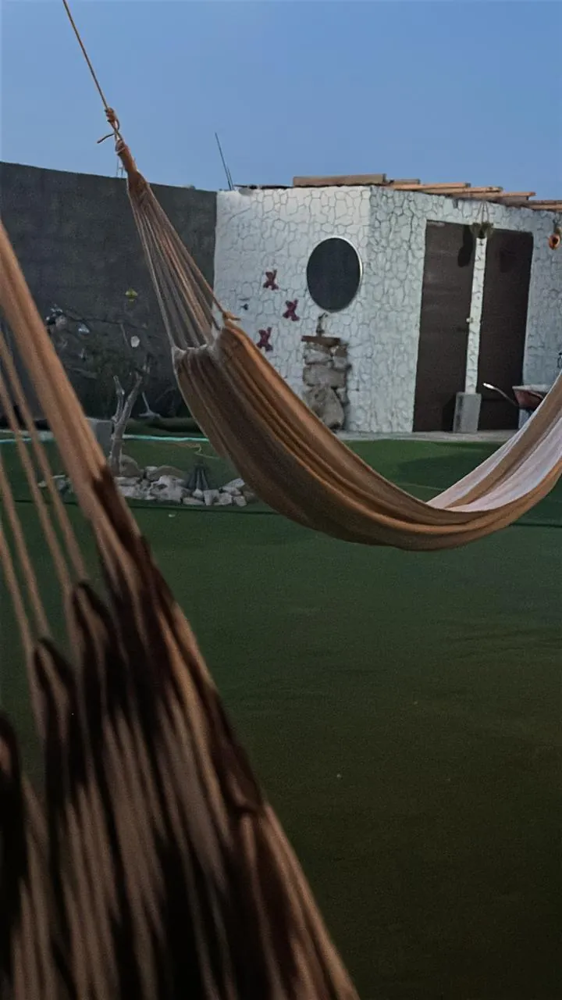
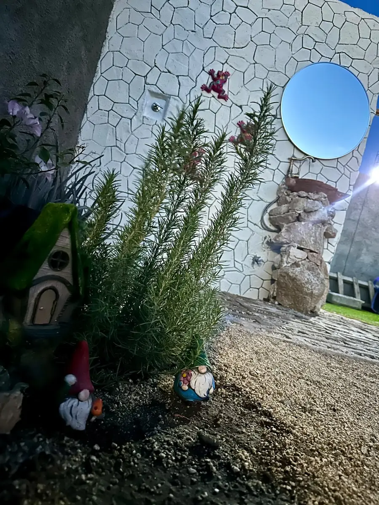

Reiki
Canalización de energía universal con imposición de manos. Una sesión profunda de relajación para soltar tensión y recuperar tu armonía.
Quiero esta sesiónTerapias holísticas by Consuelo
Reiki, sanación pleyadiana, flores de Bach y más. Un espacio íntimo para equilibrar cuerpo, mente y energía.

Una luna nueva no es oscuridad. Es el instante exacto en que todo puede comenzar otra vez. Aquí no vienes a arreglarte: vienes a recordar quién eres, soltar lo que pesa y renacer a tu propio ritmo.

Sesiones personales, sin prisa, en un ambiente cálido y privado.
Cada terapia es con atención uno a uno y el tiempo que tu proceso necesita. Al agendar por WhatsApp te comparto la ubicación.
Reservar mi espacioTerapias
Diez formas de acompañarte. Elige la que te llama o deja que te oriente.
Canalización de energía universal con imposición de manos. Una sesión profunda de relajación para soltar tensión y recuperar tu armonía.
Quiero esta sesiónUn toque suave en 32 puntos de la cabeza que invita a soltar pensamientos, creencias y cargas acumuladas.
Quiero esta sesiónSimbología de luz que armoniza tu campo energético y abre espacio a nuevas posibilidades en tu vida.
Quiero esta sesión
Equilibrio de tus siete centros energéticos para recuperar fluidez, claridad y estabilidad emocional.
Quiero esta sesiónUn espacio de escucha para comprender la raíz emocional de aquello que hoy te inquieta o te pesa.
Quiero esta sesión
Esencias florales naturales que acompañan emociones como el miedo, la ansiedad, el duelo o los grandes cambios.
Quiero esta sesiónOrientación natural para tu bienestar: hábitos, plantas y un acompañamiento integral desde tu estilo de vida.
Quiero esta sesiónTrabajo energético en el plano sutil para liberar densidades y bloqueos. Una experiencia de limpieza profunda.
Quiero esta sesión
Un viaje de respiración y visualización para calmar la mente y volver a escuchar tu intuición.
Quiero esta sesiónEncuentros para compartir, escuchar y sostenernos entre mujeres, en un ambiente de confianza.
Quiero esta sesiónCuéntame cómo te sientes y te oriento hacia la terapia que mejor acompañe tu momento. Sin compromiso.
Cuéntame cómo te sientesA veces el cuerpo y la energía hablan antes que las palabras.
Tu cuerpo pide pausa y tu energía, renovarse.
Pensamientos en bucle que te alejan de tu calma.
Algo pesa, aunque todo parezca estar bien.
Ciclos que se cierran y te piden sostén.
Ganas de avanzar, pero algo te detiene.
Una pausa consciente para reconectar contigo.
Si te reconociste en alguna, quizá este es tu momento.
Sí, es mi momentoDel primer mensaje al primer respiro profundo. Simple, cercano y sin presiones.
Cuéntame por WhatsApp cómo te sientes y qué estás buscando. Sin compromiso y sin prisa.
Te oriento hacia la terapia o la combinación que mejor acompañe tu momento actual.
Agendamos tu cita y te espero en un espacio íntimo, tranquilo y preparado para ti.
Cierras con recomendaciones sencillas para sostener tu equilibrio en el día a día.
Círculos de mujeres
Encuentros para compartir, escuchar y recordar que no caminas sola. Un espacio seguro, sin juicios, con meditación, intención y mucha calidez. Nos reunimos en Casa Luna, mi espacio.
Casa Luna
Casa Luna es mi espacio: un jardín íntimo con luces cálidas, hamacas y rincones para respirar, donde se realizan los círculos de mujeres.



Soy terapeuta holística y acompaño a quienes buscan volver a su equilibrio a través del Reiki, la sanación con símbolos pleyadianos, las flores de Bach, la naturopatía y la meditación.
Cada sesión es personal y se realiza en un ambiente cálido y privado. Mi propósito es sencillo: que salgas con más ligereza, claridad y presencia.
Las terapias se realizan de forma personal, en un espacio privado y tranquilo. Al agendar por WhatsApp te comparto la ubicación y los detalles.
Escríbeme por WhatsApp al +52 1 624 108 9831, cuéntame qué buscas y acordamos día y horario. La atención es con cita previa.
No necesitas decidirlo tú. Cuéntame cómo te sientes y te oriento hacia la terapia o la combinación que mejor acompañe tu momento.
Cada terapia tiene su propio valor y duración. Escríbeme por WhatsApp y te comparto costos y disponibilidad sin compromiso.
No. Son prácticas complementarias de bienestar y no reemplazan el diagnóstico, el tratamiento ni las indicaciones médicas. Si tienes una condición de salud, continúa con tu atención profesional.
Sí. Escríbeme por WhatsApp y te aviso de las próximas fechas y de cómo reservar tu lugar.
Contacto
Cuéntame cómo te sientes y te respondo personalmente por WhatsApp.